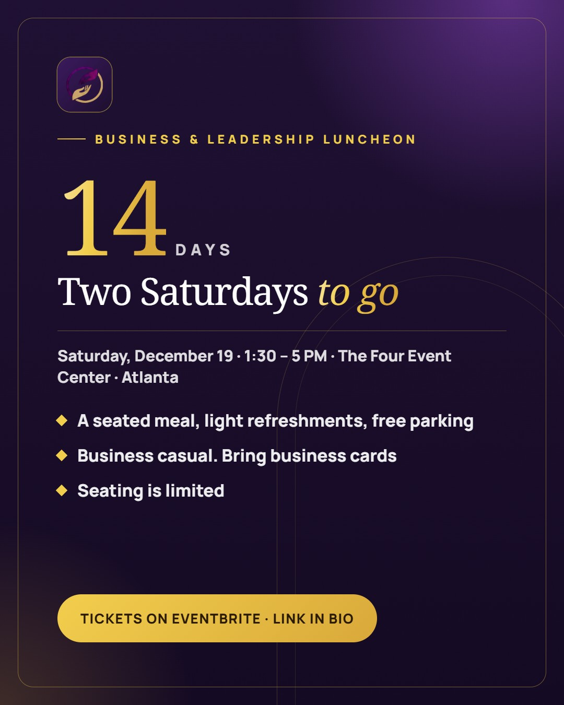
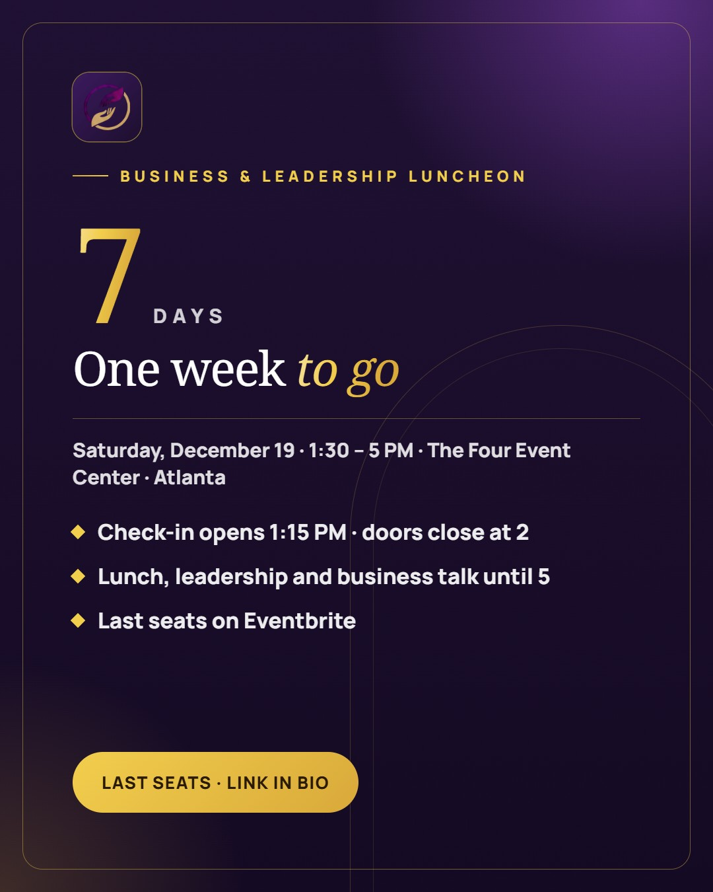
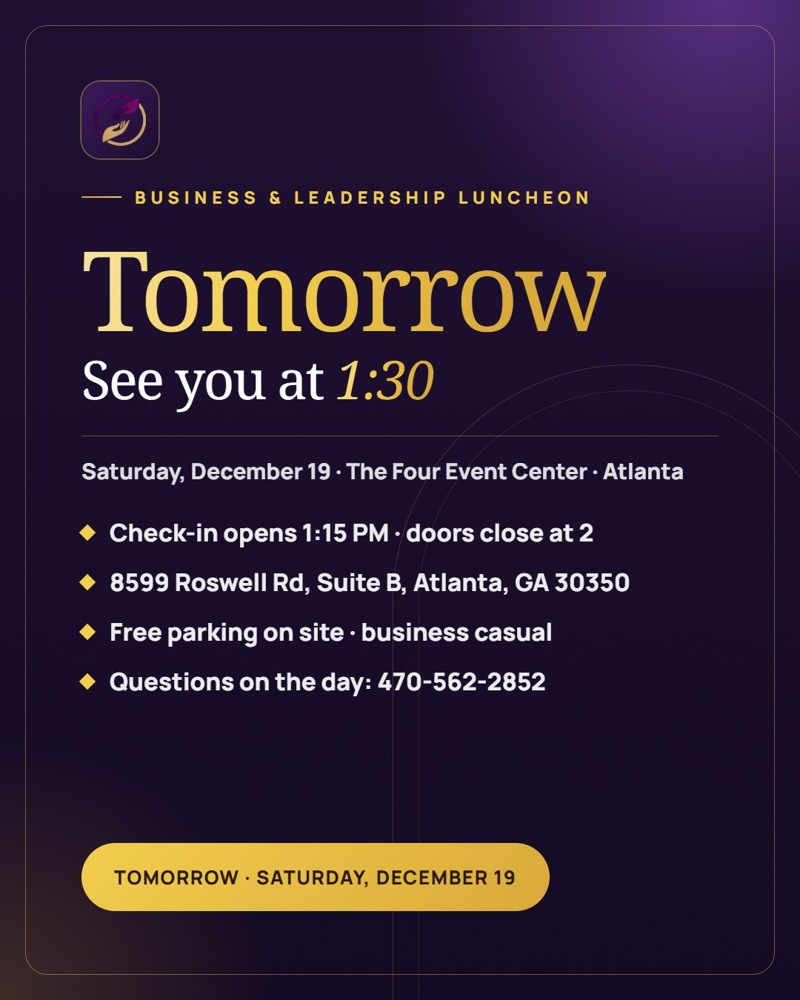
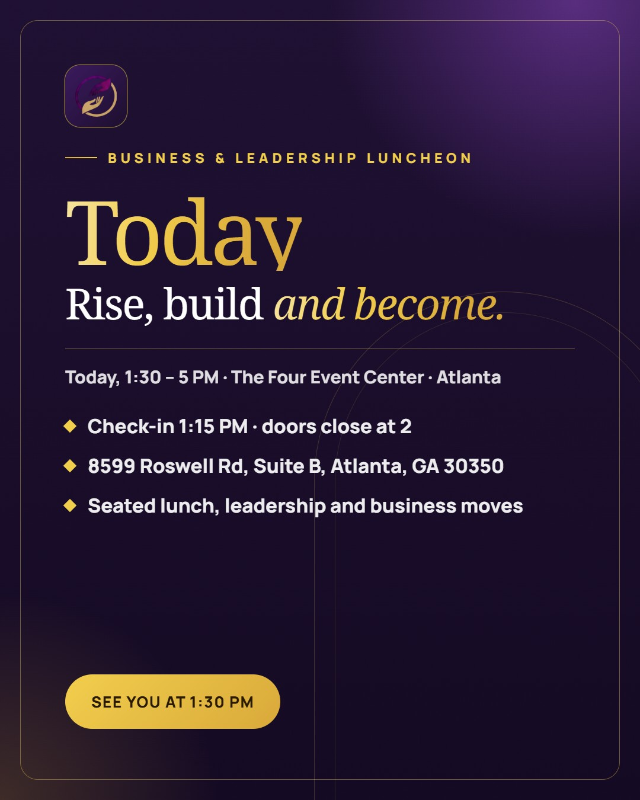

Two weeks from today. 🗓️✨ The Proverbs 31 Business & Leadership Luncheon is Saturday, December 19 · 1:30 – 5 PM at The Four Event Center · Atlanta: a seated meal, light networking, and an afternoon of faith, leadership tips and real business moves with women who are building the same way you are. Seating is limited and all sales are final, so if you have been meaning to grab your seat, this is the week. Tickets on Eventbrite (link in bio). What is the one thing you are hoping to walk away with? Tell us below 👇 #P31Marketplace #BusinessLuncheon #WomenInLeadership #FaithAndBusiness #AtlantaEvents #WomenEntrepreneurs #Proverbs31Woman

One week to go. 🙌🏾 Next Saturday, December 19, we gather at The Four Event Center · Atlanta for the Business & Leadership Luncheon. Check-in opens at 1:15 PM, doors close at 2, and we rise and build together until 5. The last seats are on Eventbrite (link in bio). All sales are final. What is the one question you are bringing for a room full of women leaders? 👇 #P31Marketplace #BusinessLuncheon #WomenInLeadership #FaithAndBusiness #AtlantaEvents #WomenEntrepreneurs #Proverbs31Woman
Three days to go. What are you bringing to the Business & Leadership Luncheon? 👜 A) Business cards B) A notebook and a big question C) A friend who needs this Comment your letter 👇 (D, all of the above, is allowed.) Saturday, December 19, 1:30 PM, The Four Event Center · Atlanta. A few seats are still on Eventbrite (link in bio). #P31Marketplace #BusinessLuncheon #WomenInLeadership #FaithAndBusiness #AtlantaEvents #WomenEntrepreneurs #Proverbs31Woman

Tomorrow. ✨ Everything you need for the Business & Leadership Luncheon: 📍 The Four Event Center · Atlanta, 8599 Roswell Rd, Suite B, Atlanta, GA 30350 🕐 Check-in opens 1:15 PM. Please arrive by 1:30; doors close at 2. 🚗 Free parking on site 👗 Business casual 📞 Questions on the day: 470-562-2852 Bring your business cards and come ready to be poured into, in faith and in business. Who is coming? Say hi below so we can look for you 👇 #P31Marketplace #BusinessLuncheon #WomenInLeadership #FaithAndBusiness #AtlantaEvents #WomenEntrepreneurs #Proverbs31Woman

Today is the day. 🙏🏾✨ The Proverbs 31 Business & Leadership Luncheon, 1:30 PM at The Four Event Center · Atlanta. Check-in opens at 1:15 and doors close at 2, so give yourself a little grace in traffic. Come as you are, in your business casual best, ready to rise and build with a room full of women walking in purpose. If you are coming, comment "I'm in" so we can look for you 👇 See you this afternoon. #P31Marketplace #BusinessLuncheon #WomenInLeadership #FaithAndBusiness #AtlantaEvents #WomenEntrepreneurs #Proverbs31Woman